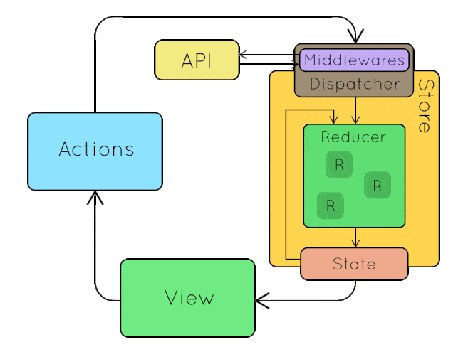

ng-conf 2019
Lessons for Terumo BCT
Karol Czajkowski, Software Developer
About me
- Polish

- Coding since Amiga 500
- M68000 ASM
- C
- PHP
- eScript
- C#
- Love skiing (Copper Mountain)
- Love racing (Go-Karts, sim racing)
Terumo BCT
- TOMEs team (2013-2017) - Belgium
- CoCo team (2017-2018) - Lakewood
- TOMEs Next Gen (2018-...) - Lakewood
Agenda
- ng-conf
- Angular 8
- Angular tips and tricks
- NgRX - cross-component communication
- NestJS - Angular's best friend
ng-conf 2019
Angular 8
A.K.A a lot of good things coming to Angular!Basics
- In RC already! http://update.angular.io
- Documentation available at http://next.angular.io
- Upgrading from 7 should take less than 30 minutes
Features
Polyfill
- Minimal - saves 7-20% space
-


- Maximum - from previous version
-


Features
Ivy Renderer

Ivy Renderer
- Reduced compile speed
- Faster apps
- Improved type checking
- Ability to debug (DOM breakpoints)
- Smaller footprint
- 30% browser memory down
- 91% memory down on e2e tests
Start using Ivy
awesome-guy@angular:~$ ng new amazing-app --enable-ivy
- Will be the default rendering engine in Angular 9
- Porting to Ivy
Features
Bazel

Bazel
- Incremental build and test
- Cloud building
- Default compiler at Google
- Faster compile time
- Google's CI build down from 60 minutes to 7.5
Start using Bazel
Bazel ships as the default compiler in Angular 8
Just upgrade!
NgRx
Redux for AngularRedux pattern
- History
- Developed by Facebook
- Originally called Flux
- Adapted by Dan Abramov for React
- Ported to Angular by NgRx team
Fundamentals
- Single source of truth
- State is immutable (read-only)
- Reducers react to actions and produce new state
Single source of truth
- Called Store
- Contains state
{
"loggedInUser": "Karol",
"todoCount": 0
}State is immutable
- No element can modify the state
- State is "enriched" by creating a copy of it
Reducers react to actions and produce new state
export function reducer(state, action) {
switch(action.type) {
case ActionTypes.SetAuth:
return {...state, loggedInUser: action.payload};
default:
return state;
}
}
The flow
!?

Let's create an app with NgRx!